공조냉동기계산업기사 (2018-08-19 기출문제)
1과목: 공기조화
1. 다음 중 공기조화기 부하를 바르게 나타낸 것은?
- 실내부하+외기부하+덕트통과열부하+송풍기부하
- 실내부하+외기부하+덕트통과열부하+배관통과열부하
- 실내부하+외기부하+송풍기부하+펌프부하
- 실내부하+외기부하+재열부하+냉동기부하
(정답률: 85%)

2. 압력 760mmHg, 기온 15℃의 대기가 수증기 분압 9.5mmHg를 나타낼 때 건조공기 1kg 중에 포함되어 있는 수증기의 중량은 얼마인가?
- 0.00623kg/kg
- 0.00787kg/kg
- 0.00821kg/kg
- 0.00931kg/kg
(정답률: 58%)
3. 8000W의 열을 발산하는 기계실의 온도를 외기 냉방하여 26℃로 유지하기 위해 필요한 외기도입량(m3/h) 은? (단, 밀도는 1.2kg/m3, 공기 정압비열은 1.01kJ/kgㆍ℃, 외기온도는 11℃이다.)
- 600.06
- 1584.16
- 1851.85
- 2160.22
(정답률: 63%)
4. 증기난방에 대한 설명으로 옳은 것은?
- 부하의 변동에 따라 방열량을 조절하기가 쉽다.
- 소규모 난방에 적당하며 연료비가 적게 든다.
- 방열면적이 작으며 단시간 내에 실내온도를 올릴 수 있다.
- 장거리 열수송이 용이하며 배관의 소음 발생이 작다.
(정답률: 64%)
5. 공기조화방식의 분류 중 전공기 방식에 해당되지 않는 것은?
- 팬코일 유닛 방식
- 정풍량 단일덕트 방식
- 2중덕트 방식
- 변풍량 단일덕트 방식
(정답률: 79%)
6. 일반적인 취출구의 종류가 아닌 것은?
- 라이트-트로퍼(light-troffer)형
- 아네모스탯(annemostat)형
- 머쉬룸(mushroom)형
- 웨이(way)형
(정답률: 86%)
7. 극간풍을 방지하는 방법으로 적합하지 않는 것은?
- 실내를 가압하여 외부보다 압력을 높게 유지한다.
- 건축의 건물 기밀성을 유지한다.
- 이중문 또는 회전문을 설치한다.
- 실내외 온도차를 크게 한다.
(정답률: 83%)
8. 다음 중 실내 환경기준 항목이 아닌 것은?
- 부유분진의 양
- 상대습도
- 탄산가스 함유량
- 메탄가스 함유량
(정답률: 74%)
9. 덕트를 설계할 때 주의사항으로 틀린 것은?
- 덕트를 축소할 때 각도는 30˚이하로 되게 한다.
- 저속 덕트 내의 풍속은 15m/s 이하로 한다.
- 장방형 덕트의 종횡비는 4:1이상 되게 한다.
- 덕트를 확대할 때 확대각도는 15˚이하로 되게 한다.
(정답률: 70%)
10. 상당방열면적을 계산하는 식에서 qo는 무엇을 뜻하는가?
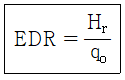
- 상당 증발량
- 보일러 효율
- 방열기의 표준 방열량
- 방열기의 전방열량
(정답률: 78%)
11. 중앙 공조기의 전열교환기에서는 어떤 공기가 서로 열교환을 하는가?
- 환기와급기
- 외기와배기
- 배기와급기
- 환기와배기
(정답률: 76%)
12. 실내 발생열에 대한 설명으로 틀린 것은?
- 벽이나 유리창을 통해 들어오는 전도열은 현열뿐이다
- 여름철 실내에서 인체로부터 발생하는 열은 잠열뿐 이다.
- 실내의 기구로부터 발생열은 잠열과 현열이다.
- 건축물의 틈새로부터 침입하는 공기가 갖고 들어오는 열은 잠열과 현열이다.
(정답률: 81%)
13. 공기여과기의 성능을 표시하는 용어 중 가장 거리가 먼 것은?
- 제거효율
- 압력손실
- 집진용량
- 소재의 종류
(정답률: 81%)
14. 환기의 목적이 아닌 것은?
- 실내공기 정화
- 열의 제거
- 소음 제거
- 수증기 제거
(정답률: 91%)
15. 공조기 내에 흐르는 냉ㆍ온수 코일의 유량이 많아서 코일 내에 유속이 너무 빠를 때 사용하기 가장 적절한 코일은?
- 풀서킷 코일(full circuit coil)
- 더블서킷 코일(double circuit coil)
- 하프서킷 코일(half circuit coil)
- 슬로서킷 코일(slow circuit coil)
(정답률: 82%)
16. 날개 격자형 취출구에 대한 설명으로 틀린 것은?
- 유니버셜형은 날개를 움직일 수 있는 것이다.
- 레지스터란 풍량조절 셔터가 있는 것이다.
- 수직 날개형은 실의 폭이 넓은 방에 적합하다.
- 수평 날개형 그릴이라고도 한다.
(정답률: 66%)
17. 송풍기의 회전수 변환에 의한 풍량 제어 방법에 대한 설명으로 틀린 것은?
- 극수를 변환한다.
- 유도전동기의 2차측 저항을 조정한다.
- 전동기에 의한 회전수에 변화를 준다.
- 송풍기 입측에 있는 댐퍼를 조인다.
(정답률: 70%)
18. 현열비를 바르게 표시한 것은?
- 현열량/전열량
- 잠열량/전열량
- 잠열량/현열량
- 현열량/잠열량
(정답률: 83%)
19. 어떤 실내의 전체 취득열량이 9kW, 잠열량이 2.5kW 이다. 이때 실내를 26℃, 50%(RH)로 유지시키기 위해 취출 온도차를 10℃로 일정하게 하여 송풍한다면 실내 현열비는 얼마인가?
- 0.28
- 0.68
- 0.72
- 0.88
(정답률: 55%)
20. 다음 중 온수난방 설비와 관계가 없는 것은?
- 리버스 리턴 배관
- 하트포드 배관 접속
- 순환펌프
- 팽창탱크
(정답률: 62%)
2과목: 냉동공학
21. 2차 냉매인 브라인이 갖추어야 할 성질에 대한 설명으로 틀린 것은?
- 열용량이 적어야 한다.
- 열전도율이 커야 한다.
- 동결점이 낮아야 한다.
- 부식성이 없어야 한다.
(정답률: 69%)
22. 냉동장치의 운전 중에 냉매가 부족할 때 일어나는 현상에 대한 설명으로 틀린 것은?
- 고압이 낮아진다.
- 냉동능력이 저하한다.
- 흡입관에 서리가 부착되지 않는다.
- 저압이 높아진다.
(정답률: 59%)
23. 히트 파이프의 특징에 관한 설명으로 틀린 것은?
- 등온성이 풍부하고 온도상승이 빠르다.
- 사용온도 영역에 제한이 없으며 압력손실이 크다.
- 구조가 간단하고 소형 경량이다.
- 증발부, 응축부, 단열부로 구성되어 있다.
(정답률: 68%)
24. 다음 조건으로 운전되고 있는 수냉 응축기가 있다. 냉매와 냉각수와의 평균 온도차는?
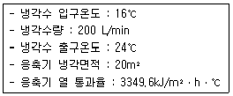
- 4℃
- 5℃
- 6℃
- 7℃
(정답률: 50%)
25. 냉동장치 내 불응축 가스에 관한 설명으로 옳은 것은?
- 불응축 가스가 많아지면 응축압력이 높아지고 냉동능력은 감소한다.
- 불응축 가스는 응축기에 잔류하므로 압축기의 토출가스 온도에는 영향이 없다.
- 장치에 윤활유를 보충할 때에 공기가 흡입되어도 윤활유에 용해되므로 불응축 가스는 생기지 않는다.
- 불응축 가스가 장치 내에 침입해도 냉매와 혼합되므로 응축압력은 불변한다.
(정답률: 82%)
26. 얼음 제조 설비에서 깨끗한 얼음을 만들기 위해 빙관 내로 공기를 송입, 물을 교반시키는 교반장치의 송풍 압력(kPa)은 어느 정도인가?
- 2.5~8.5
- 19.6~34.3
- 62.8~86.8
- 101.3~132.7
(정답률: 68%)
27. 냉동 사이클이 -10℃와 60℃ 사이에서 역카르노 사이클로 작동될 때, 성적계수는?
- 2.21
- 2.84
- 3.76
- 4.75
(정답률: 61%)
28. 증기 압축식 사이클과 흡수식 냉동 사이클에 관한 비교 설명으로 옳은 것은?
- 증기 압축식 사이클은 흡수식에 비해 축동력이 적게 소요된다.
- 흡수식 냉동 사이클은 열구동 사이클이다.
- 흡수식은 증기 압축식의 압축기를 흡수기와 펌프가 대신한다.
- 흡수식의 성능은 원리상 증기 압축식에 비해 우수 하다.
(정답률: 52%)
29. 밀폐된 용기의 부압작용에 의하여 진공을 만들어 냉동작용을 하는 것은?
- 증기분사 냉동기
- 왕복동 냉동기
- 스크류 냉동기
- 공기압축 냉동기
(정답률: 58%)
30. 저온용 냉동기에 사용되는 보조적인 압축기로서 저온을 얻을 목적으로 사용되는 것은?
- 회전 압축기(rotary compressor)
- 부스터(booster)
- 밀폐식 압축기(hermetic compressor)
- 터보 압축기(turbo compressor)
(정답률: 74%)
31. 다음 중 무기질 브라인이 아닌 것은?
- 염화칼슘
- 염화마그네슘
- 염화나트륨
- 트리클로로에틸렌
(정답률: 87%)
32. P-V(압력-체적)선도에서 l에서 2까지 단열 압축하였을 때 압축일량(절대일)은 어느 면적으로 표현되는가?
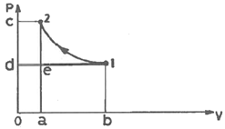
- 면적 12cd1
- 면적 1d0b1
- 면적 12ab1
- 면적 aed0a
(정답률: 81%)
33. 응축 부하계산법이 아닌 것은?
- 냉매순환량×응축기 입ㆍ출구엔탈피차
- 냉각수량×냉각수 비열×응축기 냉각수입ㆍ출구온도차
- 냉매순환량×냉동효과
- 증발부하+압축일량
(정답률: 65%)
34. 할라이드 토치로 누설을 탐지할 때 소량의 누설이 있는 곳에서 토치의 불꽃 색깔은 어떻게 변화 되는가?
- 보라색
- 파란색
- 노란색
- 녹색
(정답률: 84%)
35. 28℃의 원수 9ton을 4시간에 5℃까지 냉각하는 수냉각치의 냉동능력은? (단, 1RT는 13900kJ/h로 한다.)
- 12.5RT
- 15.6RT
- 17.1RT
- 20.7RT
(정답률: 58%)
36. 냉동장치에서 교축작용(throttling)을 하는 부속기기는 어느 것인가?
- 다이아프램 밸브
- 솔레노이드 밸브
- 아이솔레이트 밸브
- 팽창 밸브
(정답률: 73%)
37. 탱크식 증발기에 관한 설명으로 틀린 것은?
- 제빙용 대형 브라인이나 물의 냉각장치로 사용된다.
- 냉각관의 모양에 따라 헤링본식, 수직관식, 패러럴식이 있다.
- 물건을 진열하는 선반대용으로 쓰기도 한다.
- 증발기는 피냉각액 탱크 내의 칸막이 속에 설치되며 피냉각액은 이 속을 교반기에 의해 통과한다.
(정답률: 82%)
38. 기준 냉동사이클로 운전할 때 단위질량당 냉동효과가 큰 냉매 순으로 나열한 것은?
- R11 ＞ R12 ＞ R22
- R12 ＞ R11 ＞ R22
- R22 ＞ R12 ＞ R11
- R22 ＞ R11 ＞ R12
(정답률: 63%)
39. 증발잠열을 이용하므로 물의 소비량이 적고, 실외설치가 가능하며, 송풍기 및 순환 펌프의 동력을 필요로 하는 응축기는?
- 입형 쉘앤 튜브식 응축기
- 횡형 쉘앤 튜브식 응축기
- 증발식 응축기
- 공냉식 응축기
(정답률: 55%)
40. 유량 100L/min의 물을 15℃에서 9℃로 냉각하는 수냉각기가 있다. 이 냉동 장치의 냉동효과가 168kJ/kg일경우 냉매순환량(kg/h)은? (단, 물의 비열은 4.2kJ/kgㆍK로 한다.)
- 700
- 800
- 900
- 1000
(정답률: 63%)
3과목: 배관일반
41. 냉매배관 중 토출측 배관 시공에 관한 설명으로 틀린 것은?
- 응축기가 압축기보다 2.5m 이상 높은 곳에 있을때에는 트랩을 설치한다.
- 수직관이 너무 높으면 2m마다 트랩을 1개씩 설치한다.
- 토출관의 합류는 Y이음으로 한다.
- 수평관은 모두 끝 내림 구배로 배관한다.
(정답률: 69%)
42. 일정 흐름 방향에 대한 역류 방지 밸브는?
- 글로브밸브
- 게이트밸브
- 체크밸브
- 앵글밸브
(정답률: 84%)
43. 스트레이너의 종류에 속하지 않는 것은?
- Y형
- X형
- U형
- V형
(정답률: 71%)
44. 한쪽은 커플링으로 이음쇠 내에 동관이 들어갈 수 있도록 되어 있고 다른 한쪽은 수나사가 있어 강 부속과 연결할 수 있도록 되어 있는 동관용 이음쇠는?
- 커플링 C×C
- 어댑터 C×M
- 어댑터 Ftg×M
- 어댑터 C×F
(정답률: 72%)
45. 다음 프레온 냉매 배관에 관한 설명으로 틀린 것은?
- 주로 동관을 사용하나 강관도 사용된다.
- 증발기와 압축기가 같은 위치인 경우 흡입관을 수직으로 세운 다음 압축기를 향해 선단 하향 구배로 배관한다.
- 동관의 접속은 플레어 이음 또는 용접 이음 등이 있다.
- 관의 굽힘 반경을 작게 한다.
(정답률: 74%)
46. 일반적으로 관의 지름이 크고 관의 수리를 위해 분해할 필요가 있는 경우 사용되는 파이프 이음에 속하는 것은?
- 신축이음
- 엘보이음
- 턱걸이이음
- 플랜지이음
(정답률: 84%)
47. 다음 중 배관 내의 침식에 영향을 미치는 요소로 가장 거리가 먼 것은?
- 물의속도
- 사용시간
- 배관계의소음
- 물속의부유물질
(정답률: 81%)
48. 맞대기 용접의 홈 형상이 아닌 것은?
- V형
- U형
- X형
- Z형
(정답률: 71%)
49. 배수 배관의 시공상 주의점으로 틀린 것은?
- 배수를 가능한 한 빨리 옥외 하수관으로 유출할 수 있을 것
- 옥외 하수관에서 하수가스나 벌레 등이 건물 안으로 침입하는 것을 방지할 것
- 배수관 및 통기관은 내구성이 풍부할 것
- 한랭지에서는 배수 통기관 모두 피복을 하지 않을것
(정답률: 85%)
50. 프레온 냉동장치 흡입관이 횡주관일 때 적정 구배는 얼마인가?
- 1/100
- 1/200
- 1/300
- 1/400
(정답률: 76%)
51. 급탕배관 내의 압력이 0.7kgf/cm2이면 수주로 몇 m 와 같은가?
- 0.7
- 1.7
- 7
- 70
(정답률: 70%)
52. 배수설비에 대한 설명으로 틀린 것은?
- 오수란 대소변기, 비데 등에서 나오는 배수이다.
- 잡배수란 세면기, 싱크대, 욕조 등에서 나오는 배수이다.
- 특수배수는 그대로 방류하거나 오수와 함께 정화하여 방류시키는 배수이다.
- 우수는 옥상이나 부지 내에 내리는 빗물의 배수이다.
(정답률: 83%)
53. 다음 중 열역학식 트랩에 해당되는 것은?
- 디스크형 트랩
- 벨로즈식 트랩
- 버킷 트랩
- 바이메탈식 트랩
(정답률: 61%)
54. 다음 중 소켓식 이음을 나타내는 기호는?(오류 신고가 접수된 문제입니다. 반드시 정답과 해설을 확인하시기 바랍니다.)
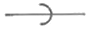
(정답률: 75%)
55. 가스배관 설비에서 정압기의 종류가 아닌 것은?
- 피셔(Fisher)식 정압기
- 오리피스(Orifice)식 정압기
- 레이놀드(Reynolds)식 정압기
- AFV(Axial Flow Valve)식 정압기
(정답률: 61%)
56. 일반적으로 프레온 냉매 배관용으로 사용하기 가장 적절한 배관 재료는?
- 아연도금 탄소강 강관
- 배관용 탄소강 강관
- 동관
- 스테인리스 강관
(정답률: 77%)
57. 가스배관의 관 지름을 결정하는 요소와 가장 거리가 먼 것은?
- 가스 발열량
- 가스관의 길이
- 허용 압력손실
- 가스 비중
(정답률: 49%)
58. 급수배관의 마찰손실수두와 가장 거리가 먼 것은?
- 관의 길이
- 관의 직경
- 관의 두께
- 유속
(정답률: 75%)
59. 가스배관을 실내에 노출설치할 때의 기준으로 틀린 것은?
- 배관은 환기가 잘 되는 곳으로 노출하여 시공할것
- 배관은 환기가 잘되지 않는 천정ㆍ벽ㆍ공동구 등에는 설치하지 아니할 것
- 배관의 이음매(용접이음매 제외)와 전기 계량기와는 60cm 이상 거리를 유지할 것
- 배관 이음부와 단열조치를 하지 않은 굴뚝과의 거리는 5cm 이상의 거리를 유지할 것
(정답률: 73%)
60. 다음 중 중앙 급탕방식에서 경제성, 안정성을 고려한 적정 급탕온도(℃)는 얼마인가?
- 40
- 60
- 80
- 100
(정답률: 71%)
4과목: 전기제어공학
61. 유도전동기의 회전력에 관한 설명으로 옳은 것은?
- 단자전압에 비례한다.
- 단자전압과는 무관하다.
- 단자전압의 2승에 비례한다.
- 단자전압의 3승에 비례한다.
(정답률: 72%)
62. 정현파전압 u=50sin(628t-π/6)[V]인 파형의 주파수는 얼마인가?
- 30
- 50
- 60
- 100
(정답률: 47%)
63. 피드백 제어계의 특정으로 옳은 것은?
- 정확성이 떨어진다.
- 감대폭이 감소한다.
- 계의 특성 변화에 대한 입력 대 출력비의 감도가 감소한다.
- 발진이 전혀 없고 항상 안정한 상태로 되어 가는 경향이 있다.
(정답률: 68%)
64. 스캔타임(scan time)에 대한 설명으로 맞는 것은?
- PLC 입력 모듈에서 l개 선호가 입력되는 시간
- PLC 출력 모듈에서 1개 출력이 실행되는 시간
- PLC에 의해 제어되는 시스템의 1회 실행시간
- PLC에 입력된 프로그램을 1회 연산하는 시간
(정답률: 69%)
65. 2진수 0010111101011001(2)을 16진수로 변환하면?
- 3F59
- 2G6A
- 2F59
- 3G6A
(정답률: 77%)
66. 교류 전기에서 실효치는?
- 최대치/2
- 최대치/√3
- 최대치/√2
- 최대치/3
(정답률: 76%)
67. 자기 평형성이 없는 보일러 드럼의 액위제어에 적합한 제어동작은?
- P동작
- I동작
- PI동작
- PD동작
(정답률: 51%)
68. 농형 유도전동기의 기동법이 아닌 것은?
- 전전압기동법
- 기동보상기법
- Y-△기동법
- 2차저항법
(정답률: 65%)
69. 블록선도에서 등가 합성 전달함수는?
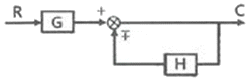
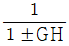
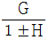
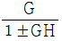
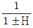
(정답률: 57%)
70. 검출용 스위치에 해당하지 않는 것은?
- 리밋 스위치
- 광전 스위치
- 온도 스위치
- 복귀형 스위치
(정답률: 65%)
71. 논리식 A(A+B)를 간단히 하면?
- A
- B
- AB
- A+B
(정답률: 75%)
72. 그림과 같은 논리회로는?
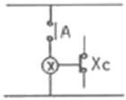
- OR 회로
- AND 회로
- NOT 회로
- NAND 회로
(정답률: 66%)
73. 어떤 계기에 장시간 전류를 통전한 후 전원을 OFF 시켜도 지침이 0으로 되지 않았다. 그 원인에 해당되는 것은?
- 정전계 영향
- 스프링의 피로도
- 외부자계 영향
- 자기가열 영향
(정답률: 76%)
74. 그림과 같은 회로에 전압 200[V]를 가할 때 30[Ω]의 저항에 흐르는 전류는 몇 [A]인가?
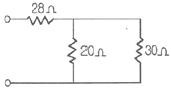
- 2
- 5
- 3
- 10
(정답률: 41%)
75. PI 제어동작은 프로세스 제어계의 정상특성 개선에 흔히 사용된다. 이것에 대응하는 보상요소는?
- 동상 보상요소
- 지상 보상요소
- 진상 보상요소
- 지상 및 진상 보상요소
(정답률: 71%)
76. 내부 장치 또는 공간을 물질로 포위시켜 외부 자계의 영향을 차폐시키는 방식을 자기차폐라 한다. 다음중 자기차폐에 가장 좋은 물질은?
- 강자성체 중에서 비투자율이 큰 물질
- 강자성체 중에서 비투자율이 작은 물질
- 비투자율이 1보다 작은 역자성체
- 비투자율과 관계없이 두께에만 관계되므로 되도록두꺼운 물질
(정답률: 66%)
77. 그림과 같은 시스템의 등가 합성전달함수는?
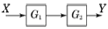
- G1 + G2
- G1ㆍG2
- G1 - G2
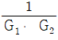
(정답률: 77%)
78. 자동제어의 조절기기 중 불연속 동작인 것은?
- 2위치 동작
- 비례제어 동작
- 적분제어 동작
- 미분제어 동작
(정답률: 76%)
79. 그림과 같은 회로에서 저항 R2에 흐르는 전류 I2[A]는?
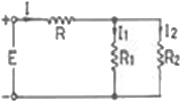
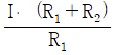
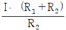
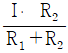
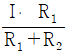
(정답률: 59%)
80. 다음의 블록선도와 등가인 블록선도는?
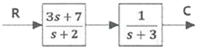
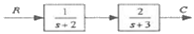
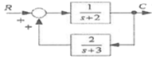
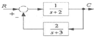
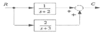
(정답률: 47%)
공기조화기는 실내와 외기를 조화시켜 실내의 온도, 습도, 청정도 등을 유지하는 역할을 합니다. 이때, 공기조화기가 부하를 받는 요소는 다음과 같습니다.
- 실내부하: 공기조화기가 처리해야 할 실내 공기의 부하
- 외기부하: 공기조화기가 처리해야 할 외부 공기의 부하
- 덕트통과열부하: 공기가 덕트를 통과하면서 발생하는 열의 부하
- 송풍기부하: 공기를 움직이는 송풍기의 부하
따라서, 이 중 "실내부하+외기부하+덕트통과열부하+송풍기부하"가 공기조화기가 받는 부하를 가장 정확하게 나타낸 것입니다.